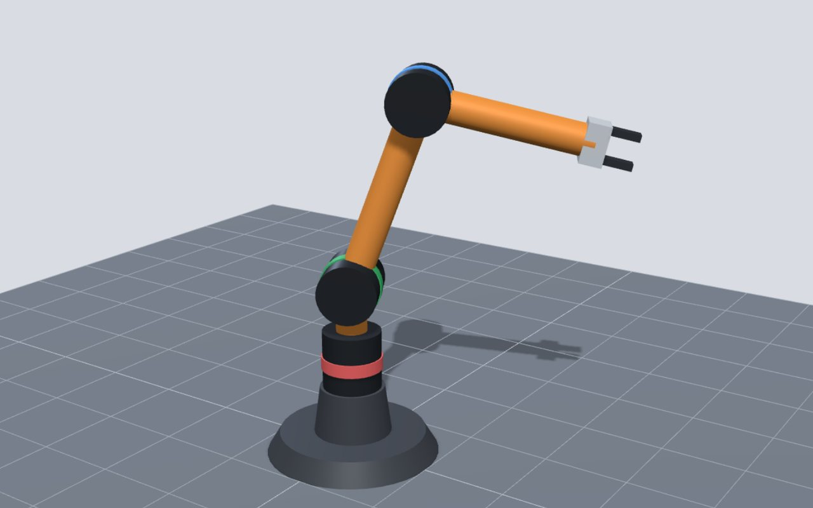
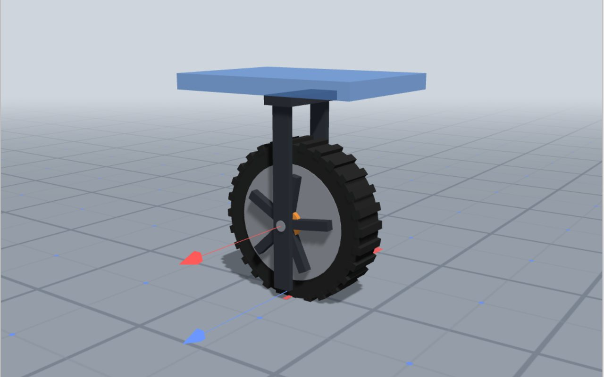
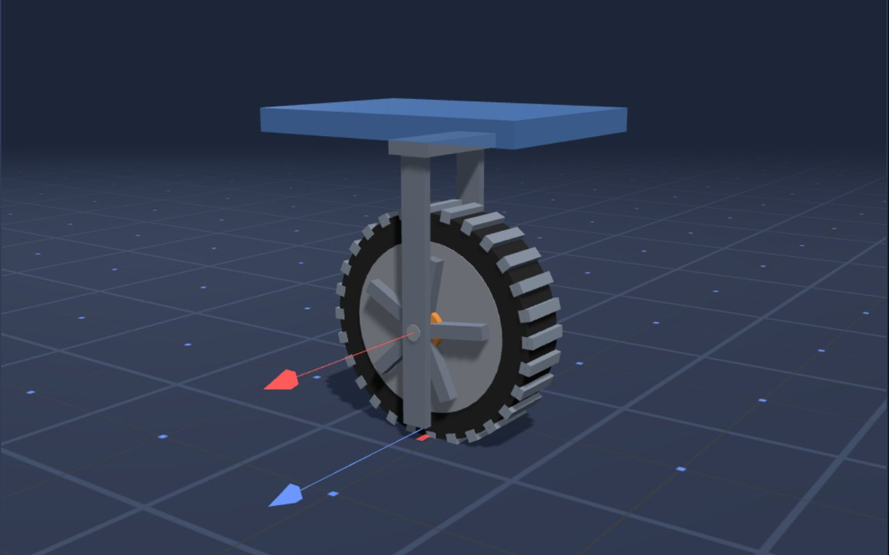

01
Discover by playing
Nothing to install and nothing to know: move robots in 3D and see how they work.

 Build your first robot
Choose a robot, assemble it in 3D piece by piece, move each joint and see what it does. The best place to start.
Open
Build your first robot
Choose a robot, assemble it in 3D piece by piece, move each joint and see what it does. The best place to start.
Open


Wheel lab Push each wheel type in 3D: fixed, castor, steered, omni, Mecanum, ball and tracks. Open
 Industrial operations in 3D
Watch a robot palletise, pack, label and inspect, in a cell with its safety fence.
Open
Industrial operations in 3D
Watch a robot palletise, pack, label and inspect, in a cell with its safety fence.
Open